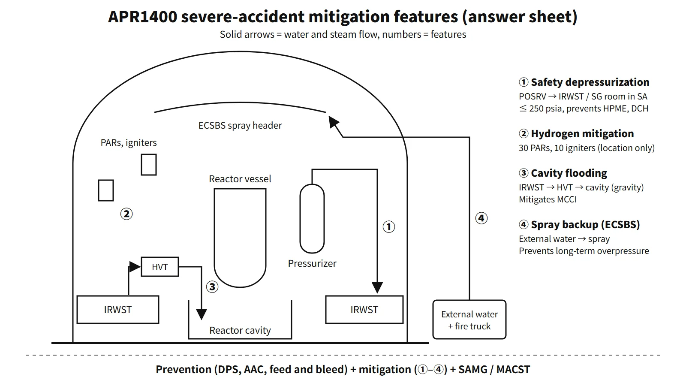

Accidents, Safety Analysis & Severe Accidents · C-SA-013
Severe Accident Features — APR1400 Prevention and Mitigation Features (Depressurization, Hydrogen, Cavity Flooding, Spray Backup)
Prevention keeps the core cooled beyond the design basis; mitigation answers each containment threat — HPME and DCH, hydrogen, MCCI and overpressure — with a dedicated feature.
Severe accident features are the combination of prevention features, which stop an event beyond the design basis from progressing to core damage, and mitigation features, which protect containment integrity after the core is damaged and prevent an early or large release of radioactive material. The APR1400 has a dedicated feature for each containment threat.
Principle and mechanism
The line between prevention and mitigation
The dividing line is core damage. Prevention features keep the core cooled even in multiple failures beyond the design basis (ATWS, SBO, total loss of feedwater, etc.). Mitigation features deal one by one with the phenomena that threaten the containment after the core has melted. In South Korea, the seven threats in Annex 3 of NSSC Notice No. 2026-1 (combustible gas burn or explosion, high temperature and overpressure, MCCI, HPME, DCH, FCI, and containment bypass) are the basis for grouping the mitigation features.
Prevention features — response by scenario (APR1400)
| Scenario that could lead to a severe accident | Prevention feature |
|---|---|
| ATWS (common cause failure of the protection system) | Diverse protection system (DPS): diverse reactor trip on high pressurizer or containment pressure, auxiliary feedwater actuation on low SG level |
| SBO (loss of offsite power + EDGs) | AAC-DG, turbine-driven auxiliary feedwater pump, batteries (24 h design at Saeul 3·4) |
| Total loss of feedwater | Feed and bleed by manually opening the POSRVs, 4 safety injection trains |
| LOCA | 4-train direct vessel injection (DVI), SITs with built-in fluidic devices, IRWST (no switchover to recirculation needed) |
| Interfacing-systems LOCA (ISLOCA) | Higher design pressure of the shutdown cooling system, isolation interlocks of low-pressure systems |
Unit-by-unit differences in the power supply arrangement are summarized in the table further below.
Mitigation features — response by threat
The four systems asked about in the 2026 exam, session 3, Q4 are the core.
| Feature | Main threat addressed | How it works | Representative values and conditions |
|---|---|---|---|
| Safety depressurization and vent system (SDVS) | HPME, DCH | 4 POSRVs installed, opened remotely by operators | RCS at or below 250 psia (about 1.72 MPa) before vessel failure |
| Hydrogen mitigation system (HMS) | Combustible gas burn or explosion | 30 PARs (passive) + 10 igniters | Average below 10 vol% for uniformly distributed hydrogen from 100 % cladding reaction |
| Cavity flooding system (CFS) | MCCI | Motor-operated valves opened remotely → IRWST → HVT → cavity, filled by gravity head | Flooding up to about 6.4 m above the cavity floor |
| Emergency containment spray backup system (ECSBS) | High temperature and overpressure | External water source + fire pump truck → dedicated spray header | Independent of Class 1E power and the IRWST |
![Half-section of the APR1400 containment with four numbered markers: 1 the POSRVs on the pressurizer (safety depressurization and vent system), 2 PARs on the dome wall (hydrogen mitigation system), 3 the IRWST to holdup volume tank to reactor cavity flow path (cavity flooding system) and 4 an external pipe from a fire pump truck to the ECSBS spray header; beside it a table listing each feature's threat (HPME and DCH, combustible gas, MCCI, high temperature and overpressure) and representative values such as 250 psia, 30 PARs plus 10 igniters, about 6.4 m flooding and independence from Class 1E power](../../assets/images/concepts/c-sa-013-apr1400-severe-accident-features/fig1-apr1400-sa-features.webp)
Safety depressurization and vent system — why depressurize before vessel failure?
If secondary-side heat removal is lost, as in an SBO, the core melts while the RCS pressure stays near the POSRV opening pressure (about 17 MPa). If the lower head is breached at that point, the melt is ejected at high pressure (HPME), and fine particles rapidly heat and pressurize the containment atmosphere (DCH). So when the core exit temperature reaches 649 °C and the SAMG is entered, operators open the POSRVs to bring the RCS below 250 psia before vessel failure. Depressurization does not prevent vessel failure itself; it reduces the HPME and DCH risk if failure occurs. The January 2025 NSSC review of the accident management plans (Saeul 1·2, Shin-Hanul 1·2) assessed that the POSRVs depressurize the RCS from 17.25 MPa to 1.72 MPa or below and so prevent HPME and DCH.
Saeul 3·4 (formerly Shin-Kori 5·6) add two trains of motor-operated emergency reactor depressurization valves (ERDVs) dedicated to severe accidents (449.1 t/h per train; the POSRVs are 244.9 t/h each). In a KINS MELCOR assessment (SBO), even when one ERDV train was opened 1 hour after the first POSRV opening, the pressure at vessel failure was 1.46 MPa, below the DCH criterion of 1.78 MPa. Design-basis overpressure discharges are condensed in the IRWST spargers, but the literature describes a design in which, during severe-accident depressurization, the discharge is directed toward the steam generator compartment so that hydrogen does not accumulate in the IRWST. Without containment heat removal this discharge raises the containment pressure, so it is judged together with the sprays and the ECSBS.
![Conceptual RCS pressure plot from 0 to 18 MPa against accident progression (SBO, SG dryout, CET 649 °C and SAMG entry): without deliberate depressurization the pressure stays near the POSRV setpoint of about 17.2 MPa until the vessel fails at high pressure with HPME and DCH risk; with operator depressurization it falls below the 250 psia (1.72 MPa) target before the vessel fails at low pressure; side cards give POSRV capacity 244.9 t/h each, ERDV 449.1 t/h per train, the KINS result of 1.46 MPa against a 1.78 MPa DCH criterion, and the 2025 review finding of 17.25 to 1.72 MPa](../../assets/images/concepts/c-sa-013-apr1400-severe-accident-features/fig2-rcs-depressurization.webp)
Hydrogen mitigation system
The PARs handle gradual releases without power, and the igniters burn local high concentrations at low concentration during rapid releases.
Cavity flooding system and cavity geometry
In the CFS, operators open the motor-operated valves between the IRWST and the holdup volume tank (HVT) and between the HVT and the reactor cavity, and IRWST water fills the cavity by the difference in head. There is no pump, but valve operation is needed; the valves are normally closed with power removed. The cavity floods up to about 6.4 m above its floor, cooling the spread melt and scrubbing fission products under water. The cavity has a wide, unobstructed floor (basic design 80.36 m², 0.0201 m²/MWt, meeting the KURD value of 0.02) to spread the melt thinly, and a convoluted corium chamber that reduces debris carried up into the upper containment. In the Shin-Kori 3·4 (now Saeul 1·2) review, a barrier wall added to keep melt out of the cavity sump reduced the floor to 72 m² (70 m² in the analysis), and the concrete above the liner is 1.22 m. Uncertainty remains, however, that top flooding alone does not guarantee cooling.
The South Korean Saeul 1·2 SAMG includes an in-vessel retention by external reactor vessel cooling (IVR-ERVC) strategy that adds a shutdown cooling pump and a boric acid makeup pump to the CFS to raise the cavity water level up to below the hot legs. It is not credited as a licensing design basis, and depressurization is a prerequisite.
Emergency containment spray backup system
When all design-basis sprays (interchangeable with the shutdown cooling pumps) are lost or the IRWST cannot be used, this system feeds water from an external source such as the raw water tank through an external pump such as a fire pump truck into a dedicated spray header and nozzles. It does not depend on Class 1E power or the IRWST. It condenses steam to prevent long-term overpressure and overtemperature and washes out aerosols. Unlike the filtered vents (CFVS) of South Korea's operating plants, the South Korean APR1400 secures its containment depressurization function with this system.
What it means in a plant
Differences by unit
| Item | Saeul 1·2 (formerly Shin-Kori 3·4) | Saeul 3·4 (formerly Shin-Kori 5·6) | US DC |
|---|---|---|---|
| RCS rapid depressurization | 4 POSRVs | 4 POSRVs + 2 ERDV trains | POSRVs (SDVS) |
| Hydrogen | 30 PARs + 10 igniters | same | 30 PARs + 8 igniters |
| Ex-vessel melt | CFS + wide cavity | same | CFS + wide cavity |
| Overpressure | Sprays + ECSBS | same | Sprays + ECSBS |
| AC power | 2 EDGs + AAC-DG | 2 EDGs + AAC-DG | 4 EDG trains + gas turbine AAC |
The European export version EU-APR adopted an ex-vessel core catcher to meet the European Utility Requirements (EUR). The South Korean APR1400 and the US DC have no core catcher.
"Shin-Kori 3" in the 2015 exam, session 3, Q5 is now Saeul 1. After Fukushima, external emergency cooling-water injection paths (RCS, SGs, spent fuel pool) and mobile generator and pump vehicles were added.
Compared with the Korean standard plant (OPR1000)
The 65th exam, session 4, Q2 asked about the OPR1000. Taking Shin-Kori 1·2 as an example, the features linked with the containment are 2 safety depressurization valves, 20 hydrogen igniters plus later-installed PARs, a cavity with a corium collection chamber and flow barrier wall, the spray system, and filtered venting added as a follow-up measure. The big difference from the APR1400 is that the in-containment IRWST of the APR1400 serves both for condensing design-basis discharges and as the water source for cavity flooding.
Regulatory basis
| Basis | Key point |
|---|---|
| Severe Accident Policy for nuclear power plants (2001.8.17) | Safety goal (increase in risk to residents 0.1 %), PSA and correction of weaknesses, capability to prevent core damage and mitigate in containment, severe accident management plan — voluntary implementation by the licensee |
| Korea's Nuclear Safety Act, Article 20(2) and Article 21(1)6 | Submission of the accident management plan and licensing criteria (in force June 2016) |
| Korean technical standard rule, Articles 85-19 to 85-23, Article 23 | Accident management requirements, control of combustible gas in containment |
| NSSC Notice No. 2026-1, Annex 3 | Seven threats (Annex 2 of Notice No. 2017-34 when the questions were set) |
| SECY-93-087, 10 CFR 52.47(a)(23) | Severe-accident design of evolutionary LWRs (depressurization, cavity 0.02 m²/MWt, 24 h containment integrity); severe-accident design features in a DC application |
| 10 CFR 50.44(c), IAEA SSR-2/1 Rev.1 Requirement 20 | Hydrogen 10 %; design extension conditions and practical elimination of early or large releases |
What has changed since the questions were set: when the questions were set in 2013–2016, severe-accident response was voluntary implementation under the policy. Today, the capability to deal with each threat is demonstrated in the accident management plan, and the plans for Saeul 1·2 and Shin-Hanul 1·2 were first approved on 9 January 2025.
Easily confused pairs
| ECSBS | CFVS | CFS | Core catcher | |
|---|---|---|---|---|
| Purpose | Depressurization and scrubbing by spray | Depressurization by filtered venting | Melt cooling by flooding the cavity | Melt captured and cooled in a dedicated structure |
| Release of material | None | Released to the atmosphere after filtering | None | None |
| Where used | APR1400 | Follow-up measure at South Korean operating plants | APR1400 (separate from IVR-ERVC) | EU-APR, EPR, VVER |
Key points at a glance
- Definition: core-damage prevention features + mitigation features that keep containment integrity and prevent large releases.
- Prevention: ATWS → DPS; SBO → AAC-DG and TDAFW; total loss of feedwater → feed and bleed via POSRVs; LOCA → 4-train DVI, SITs, IRWST; ISLOCA → high design pressure of the shutdown cooling system.
- Safety depressurization and vent: POSRVs (4) opened remotely by operators, at or below 250 psia (1.72 MPa) before vessel failure → prevents HPME and DCH; Saeul 3·4 add 2 ERDV trains.
- Hydrogen mitigation: 30 PARs + 10 igniters, average below 10 vol%.
- Cavity flooding (CFS): motor valves opened → IRWST → HVT → cavity, filled by gravity head (up to about 6.4 m), wide floor (0.02 m²/MWt concept), corium chamber, MCCI mitigation.
- ECSBS: external water source and fire truck → dedicated spray header, independent of Class 1E power and the IRWST, prevents long-term overpressure.
- Differences: the South Korean APR1400 uses ECSBS instead of CFVS; only the EU-APR has a core catcher.
- Criteria: seven threats in Annex 3 of Notice No. 2026-1; 2025.1 review maximum pressure 0.60 / allowable 0.85 MPa.

This is a model answer, not an official solution. It reflects the criteria current as of 2026.
Exam relevance
Severe accident features have appeared five times in the Korean Professional Engineer (Nuclear Power) exam: 65th exam, session 4, Q2 (severe accident features of the Korean standard plant, especially those linked with the containment); 2013 exam, session 4, Q4 (APR1400 scenarios that could lead to a severe accident and the prevention features for them); 2015 exam, session 3, Q5 (the 2001 severe accident policy and the mitigation design of the APR1400 at Shin-Kori 3); 2016 exam, session 4, Q2 (nine means of dealing with severe accidents); and 2026 exam, session 3, Q4 (functions of the four APR1400 systems: hydrogen mitigation, safety depressurization and vent, cavity flooding and emergency containment spray backup). The 2016 question is generic to reactor types, so answer by grouping depressurization, AAC, mobile equipment, external injection paths, hydrogen control, cavity flooding, IVR-ERVC, core catcher and filtered venting into prevention and mitigation. For the APR1400 questions, tie each feature to the threat it addresses and give one number (250 psia, 30 PARs + 10 igniters, about 6.4 m, 0.02 m²/MWt).